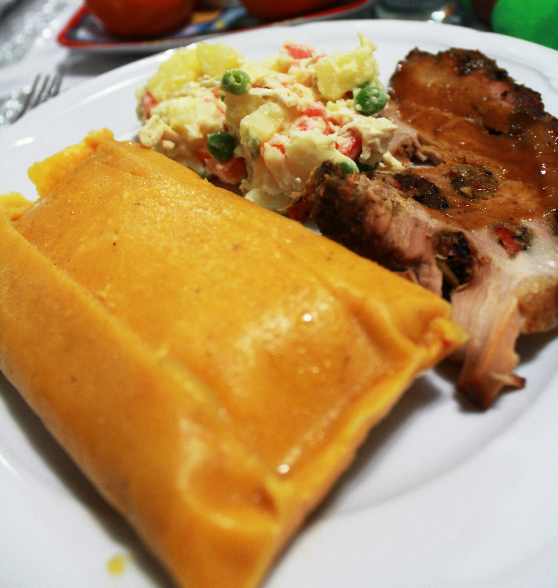

Hallaca

Description
Is a typical dish from Venezuela. Is a tamal that consists of corn dough stuffed with a stew of beef, pork, or
chicken and other ingredients such as raisins, capers, olives, sweet onions, onions, egg, potatoes. Hallacas are
folded in plantain leaves, tied with strings, and boiled; The dish is traditionally served during the Christmas
season and has several regional variants in Venezuela
Ingredients (35 – 40 Hallacas):
- 5 kg banana leaves
- 4 cups (1 L) vegetable or corn oil
- 200 gr onoto
- 3 beef bouillons
- 2 leeks
- 4 green onions
- 10 oz (300 gr) garlic cloves
- 6 yellow onions
- 3 green bell peppers
- 3 red bell peppers
- 18-20 sweet peppers
- 1 ½ kg beef
- 1 ½ kg pork
- 1 ½ kg chicken breast
- 3 oz (80 gr) capers
- 1 bottle of red sweet wine
- 3 packs (1kg each) Harina P.A.N
- 12 oz (340 gr) black raisins
- 21 oz (600 gr) Green Olives
- 16 oz (450 gr) Italian Mix Giardiniera pickles (encurtidos)
- 6 medium white potatoes
- Salt
- Black pepper
- Cooking Twine (pabilo)
How to make Venezuelan guiso for Hallacas:
- Add the cut meats and enough broth to cover the meats (I added 8 cups) into a large pot. Bring to a boil
over medium-high heat. When boiling, reduce heat to medium-low.
- Add 1 cup of achiote oil into a large skillet. When hot, add onion and cook for 3-4 minutes; make sure the
oil is not too hot that it is going to toast the onion. Then add the leeks and green onion; continue cooking
for 2-3 minutes. Add the garlic; mix to combine and cook until fragrant and soft, about 3 minutes. Finally,
add the bell pepper and sweet peppers and cook for 5 minutes.
- Add the sautéed veggies (sofrito) to the pot with the meat and broth. Mix well and let it cook for 5 – 8
minutes. Add capers, mix and continue cooking for 5 minutes.
- In a mixing bowl, combine the sweet wine and Harina P.A.N. Mix vigorously to prevent lumps from forming.
- Add the wine mixture to the meats. You need to add the wine mixture and mix at the same time to prevent
lumps from forming. Taste and add more salt if needed. If the guiso is too pale, you can add more achiote
oil to add more color. Let the guiso cook for 5 – 8 more minutes. The guiso must be thick, not runny, so if
needed, you can dissolve more Harina P.A.N in water or broth and add it to the guiso to thicken.
- Turn off the heat and let the guiso cool.
Toppings – Adornos
Each region of Venezuela has its own version of adornos, which can range from slices of eggs, bacon, to
chickpeas.
For example:
- Yellow onions, cut into rings
- Red bell peppers, cut in thin strips
- Black raisins
- Green Olives
- Italian Mix Giardiniera pickles (encurtidos), finely chopped
- Potatoes, cook and cut into slices
- Chicken breast, cut in thin strips
How to assemble a hallacas
- Place the main banana leaf over a flat surface. Make sure the leaf vein is horizontal to make the folding
process easier.
- Spread, in the middle of the leaf, with a spoon ½ cup of dough until it is 1/6 of an inch or 4 mm thick.
- Add, in the middle of the dough, 1/3 cup of guiso (meat filling).
- Then start adding the toppings of your choice. This is what I did: I sprinkled ¼ teaspoon of chopped Italian
Mix
Giardiniera pickles over the guiso. Then, added a ring of onion, one strip of red pepper, a potato slice, 2
green olives, 5-6 raisins, and one strip of chicken breast.
- Close the hallacas: Take the top and bottom edges of the leaf and attach them upward; make sure the top and
bottom edges of the dough join together. Then create a fold until it is completely sealed. Fold the other
two
ends towards the inside.
- Then place the fold perpendicularly on the second sheet and wrap it. Fold the ends towards the inside.
- Finally, wrap around the fold with the third leaf (faja) just to hold everything together.
- Tie the hallacas with cooking twine. Cross them three times in each direction (horizontal and vertical) and
close with a knot or bow, almost as you would with a gift.
Cooking hallacas
- Fill 3/4 of a large pot with water (I used a 24-qt pot). Add 2-3 tablespoons of salt. NOTE: Depending on the
capacity of your pot, you might need to add more or less salt. The water is supposed to taste salty, so add
the
salt, mix, taste, and adjust if necessary. Bring to a boil.
- When the salty water is boiling, add as many hallacas as you can fit, they must all be completely submerged
in
the water and cook for 40 minutes.
- Remove and drain them, preferably in the vertical position. I like to place them side by side in the sink.
- Repeat the process with the other hallacas.
- Let them cool completely before refrigerating.
For major information about this delicious Venezuelan dish, visit here